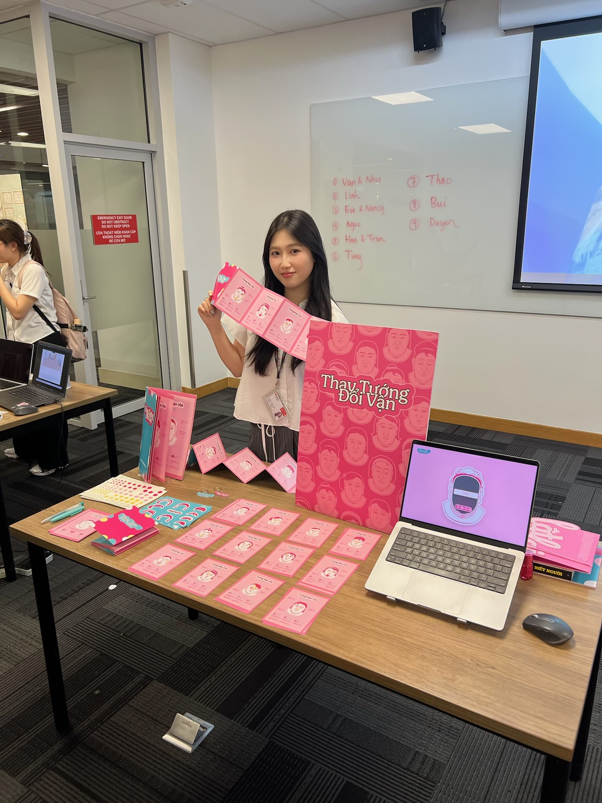

Thay Tướng Đổi Vận

Context
In traditional Eastern culture, Physiognomy has long served as a guide for understanding destiny. By reading the person's face, practitioners provide a blueprint of their life, wealth, and family. However, in modern society, this practice often results in fixed stereotyping. When physical features are treated as permanent verdicts of "good" or "bad" luck, it creates a psychological burden. This mindset has driven a widespread obsession with cosmetic surgery, an attempt to "fix" one's fate by altering the surface, often neglecting the internal self.
Concept
This project shifts the perspective of physiognomy from a static cage to a dynamic, reflective dialogue. I reframed the traditional concept of Thay Tướng Đổi Vận (Change Appearance, Change Fate) into a new framework: Thay Tâm Đổi Vận (Change the Mind, Change Fate). The narrative moves the user from being a passive recipient of luck to becoming the active author of their own character.
Experience
Rooted in Tâm Sinh Tướng, the belief that our inner self shapes our outer form, this project bridges traditional heritage with modern interaction through two core pillars:
- The Framework: Reimagining the 12 traditional Houses of Physiognomy as a space for self-reflection rather than judgment.
- The Connection: An interactive space where your physical appearance and internal mind meet, letting you reshape the meaning of your features based on who you are inside.
The Deliverables: Interactive website, the "new" Physiognomy book, mini craft kit.

The Digital Experience:
A scrollytelling
introduction establishes the cultural context, prompting users to
pivot from passive recipients of a fixed fate to active
participants in self-reflection.


The Physiognomy Book:
It serves as a collective gallery of user outcomes. Rather than
categorizing people into groups like traditional physiognomy
books, this version treats every individual as a unique case
study.
Each entry features a Fate Card documenting the user's
personal transformation and chosen inner qualities, proving that
while our features are given, the meaning we assign to them is
entirely our own.


Zine version
The Mini Craft Kit
It brings the digital experience into the physical world, acting
as an interactive touchpoint for showcase events. Visitors engage
with the project hands-on, walking away with their personalized
Fate Card as a tangible reminder of their reflective journey.



Credits
Mentor: Sweii Chong
Research, Graphics, Motion & UI Design: Ngoc Thao
Website Developer: Quang Phap